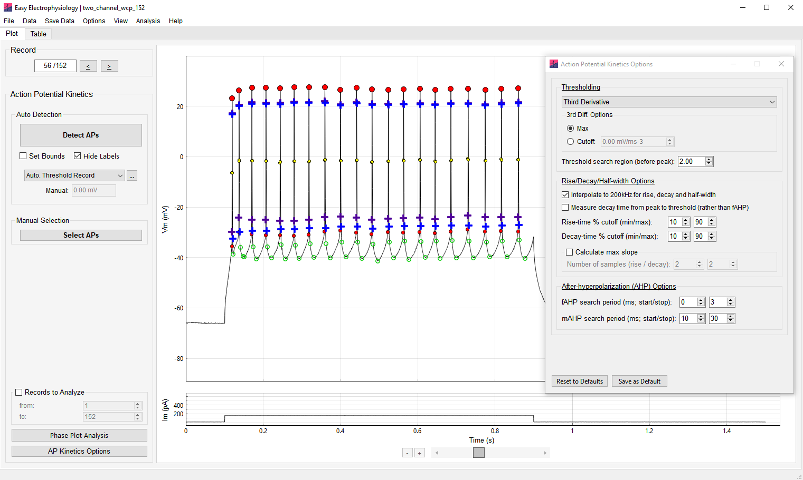
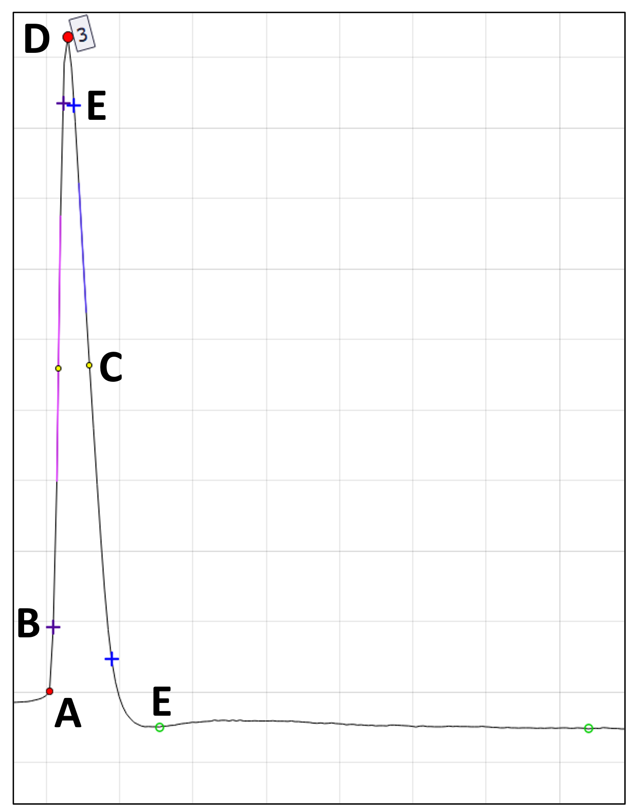
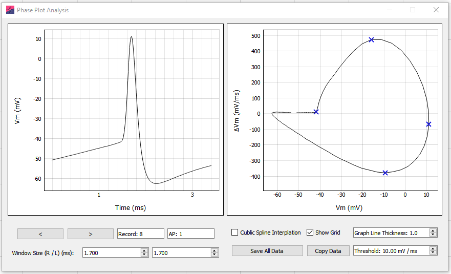

Action potential kinetics
Action Potential Kinetics analysis calculates:
- AP threshold
- amplitude
- half-width
- rise and decay time
- fast and medium afterhyperpolarization (fAHP and mAHP, respectively)
- maximum rise and decay slopes
Options for automatic detection and manual selection of APs are available. For details on automatic spike detection, see Action potential counting.
Action potential detection
The action potential kinetics algorithm first identifies the action potential peak, calculates the threshold, and then calculates the additional kinetic measures. AP peaks are detected using the same spike-detection methods and settings as Action potential counting, including the amplitude, rise, fall, width, and minimum-distance criteria. Changes to these detection settings therefore apply to both analyses.

Action potential kinetics overview

A Threshold – The threshold value for the AP. The period before the peak to search for the threshold is set by Threshold search region (before peak). The detection method is set under Thresholding.
A & D Amplitude – The AP peak voltage minus the threshold voltage.
B Rise time – The time between two samples specified as percentages of the AP amplitude (displayed with purple crosses; default \(10\)–\(90\%\)). The percentages are set by Rise-time % cutoff (min/max).
C Half-width – The time between the two half-amplitude samples on the rise and decay, displayed with black-bordered filled yellow circles. The nearest samples to the true half-amplitude are used to calculate the full width at half maximum (FWHM); Interpolate to 200kHz for rise, decay and half-width can greatly improve accuracy.
D Peak – The maximum voltage of the action potential.
E Decay time – The time between two samples specified as percentages of the decay amplitude (displayed with blue crosses; default \(10\)–\(90\%\)). The percentages are set by Decay-time % cutoff (min/max). The decay endpoint is controlled by Measure decay time from peak to threshold (rather than fAHP).
F fAHP and mAHP – The fast and medium afterhyperpolarizations are calculated as the minimum AHP voltage minus AP threshold voltage. Each voltage, displayed with an open green circle, is the minimum within the corresponding search period set under After-hyperpolarization (AHP) Options.
B & E Maximum rise / decay slope – The maximum slopes during the AP rise and decay, calculated as linear regressions over \(n\) samples. Enable and configure these results with Calculate max slope.
Action Potential Kinetics Options
Options can be accessed from the AP Kinetics Options button at the bottom of the Action Potential Kinetics panel or by clicking Options › Action Potential Kinetics Options.
Thresholding
A number of threshold detection methods are available from the Thresholding dropdown menu (see Appendix I for mathematical formulas). Once an AP peak is detected, the method is applied to the region before the peak set by Threshold search region (before peak). The detected threshold is plotted on the AP with a filled red circle. The threshold is calculated as the \(V_\mathrm{m}\) that maximizes or minimizes the relevant function:
First Derivative
Max – The maximum of the first derivative.
Cutoff – The first sample at which the first derivative passes the cutoff. A value of \(20\ \mathrm{mV/ms}\) usually works well.
Third Derivative
Max – The maximum of the third derivative.
Cutoff – The first sample at which the third derivative passes the cutoff.
Method I (Sekerli et al., 2004) – Method I of the phase-space methods introduced by Sekerli et al. (2004). Samples with a first derivative below 1st Diff. Lower Bound are excluded as potential thresholds; the default value typically works well.
Method II (Sekerli et al., 2004) – The 1st Diff. Lower Bound may be specified as for Method I.
Leading Inflection – The minimum of the first derivative.
Maximum Curvature – The maximum-curvature method introduced by Rossokhin and Saakian (1992).
Threshold search region (before peak)
The period before the peak, in milliseconds, in which to search the \(V_\mathrm{m}\) data for the AP threshold.
Interpolate to 200kHz for rise, decay and half-width
Linearly interpolates the data to a sampling rate of \(200\ \mathrm{kHz}\) before calculating half-width, rise time, and decay time. This is recommended to improve the accuracy of measured kinetics.
Measure decay time from peak to threshold (rather than fAHP)
When selected, the decay amplitude is measured from the AP peak to the first sample at which the repolarizing phase reaches the AP threshold. By default, when this option is not selected, the decay amplitude is measured from the AP peak to the fAHP. Decay-time % cutoff (min/max) is applied to this decay amplitude.
Rise-time % cutoff (min/max)
By default, the \(10\)–\(90\%\) rise time is calculated. The minimum and maximum percentage cutoffs can be changed with this option.
Decay-time % cutoff (min/max)
By default, the \(10\)–\(90\%\) decay time is calculated from the decay amplitude, measured from the peak to the fAHP or threshold according to the selected endpoint option. The minimum and maximum percentage cutoffs can be changed with this option.
Calculate max slope
The maximum rise and decay slopes for each AP are calculated when this option is selected. It is disabled by default because it can increase analysis time.
The maximum slope is calculated as a linear regression over \(n\) points. Number of samples (rise / decay) sets \(n\) separately for the rise and decay.
After-hyperpolarization (AHP) Options
Set the periods after the AP peak in which to search for the fast and medium afterhyperpolarizations with fAHP search period (ms; start/stop) and mAHP search period (ms; start/stop). The fAHP and mAHP are plotted on the AP with open green circles.
The mAHP is defined as the voltage during period after the AP peak. To measure the voltage sag at the end of a current injection, to which mAHP sometimes refers, see Sag and hump analysis in Input resistance.
Reset to Defaults restores the default Action Potential Kinetics options. Save as Default saves the current options as the defaults for future use.
Phase plot analysis
Phase plot analysis of action potentials is available under AP Kinetics analysis. After an analysis has been run, the Phase Plot Analysis button on the bottom-left of the AP Kinetics panel will bring up the phase plot analysis window.
The phase plot analysis window contains two panels. On the left panel is displayed the currently selected AP, while the right panel contains the phase-space plot of the currently selected AP.
Selecting APs
All analyzed APs can be selected for phase-space analysis. Use the < and > buttons to move through the APs, or enter a value directly in the Record or AP box.
Window Size (R / L) (ms) adjusts the periods shown to the right and left of the selected AP. Changing this window updates both the AP plot and the phase-space plot and can affect the phase-plot results. In practice, the left window is often adjusted to place the start of the analysis close to the AP threshold.
In theory, it is also possible to increase the window to create phase-space plots of multiple APs. However, the phase-space plot parameters will be calculated only once on a phase-space plot.

For HEKA .dat files, Add zero offset (HEKA) applies the recorded channel offset to the displayed AP. Delete AP removes the selected AP from the analysis.
Analysis
A phase-space plot graphs the first derivative of \(V_\mathrm{m}\) (\(\mathrm{d}V_\mathrm{m}/\mathrm{d}t\), in \(\mathrm{mV/ms}\)) on the y-axis against \(V_\mathrm{m}\) on the x-axis. This represents the rate at which \(V_\mathrm{m}\) changes at each voltage.
Phase plot parameters
The phase-space plot provides the following parameters:
Threshold – The \(V_\mathrm{m}\) at which the first derivative, \(\mathrm{d}V_\mathrm{m}/\mathrm{d}t\), first crosses the cutoff set by Threshold. This provides a phase-plot estimate of the AP threshold.
Maximum \(\mathrm{d}V_\mathrm{m}/\mathrm{d}t\) – The maximum positive rate of \(V_\mathrm{m}\) change.
Minimum \(\mathrm{d}V_\mathrm{m}/\mathrm{d}t\) – The maximum negative rate of \(V_\mathrm{m}\) change.
Maximum \(V_\mathrm{m}\) – The maximum AP voltage, equivalent to the AP peak.
Exporting results
Copy Parameters – Right-click the plot and select this action to copy the record, AP number, AP peak time, and \((V_\mathrm{m}, \mathrm{d}V_\mathrm{m}/\mathrm{d}t)\) coordinates of the threshold, maximum \(V_\mathrm{m}\), maximum \(\mathrm{d}V_\mathrm{m}/\mathrm{d}t\), and minimum \(\mathrm{d}V_\mathrm{m}/\mathrm{d}t\).
Copy Data – Copies the parameters above, the AP-plot data (time and \(V_\mathrm{m}\)), and the phase-space data (\(V_\mathrm{m}\) and \(\mathrm{d}V_\mathrm{m}/\mathrm{d}t\)). Without interpolation, the phase-space \(V_\mathrm{m}\) values equal the AP-plot \(V_\mathrm{m}\) values. With interpolation enabled, the phase-space values are cubic-spline interpolated.
Save All Data – Saves the parameters, AP-plot data, and phase-space data described above for every analyzed AP to an
.xlsxor.csvfile.
Analysis options
Cubic Spline Interpolation – Smoothly interpolates the phase-space plot with an interpolation factor of \(100\), ensuring continuity through the second derivative at interpolated knots. This can be useful when the AP is not well sampled.
Threshold – Sets the first-derivative cutoff, in \(\mathrm{mV/ms}\), used to calculate the AP threshold from the phase-space plot. The AP threshold is the \(V_\mathrm{m}\) at which the first derivative crosses this value.
Graph options
Show Grid – Toggles the grid on the AP and phase-space plots.
Graph Line Thickness – Adjusts the AP and phase-space plot line widths. Due to a limitation in the underlying graphing software, line thicknesses \(> 1\) may reduce performance.